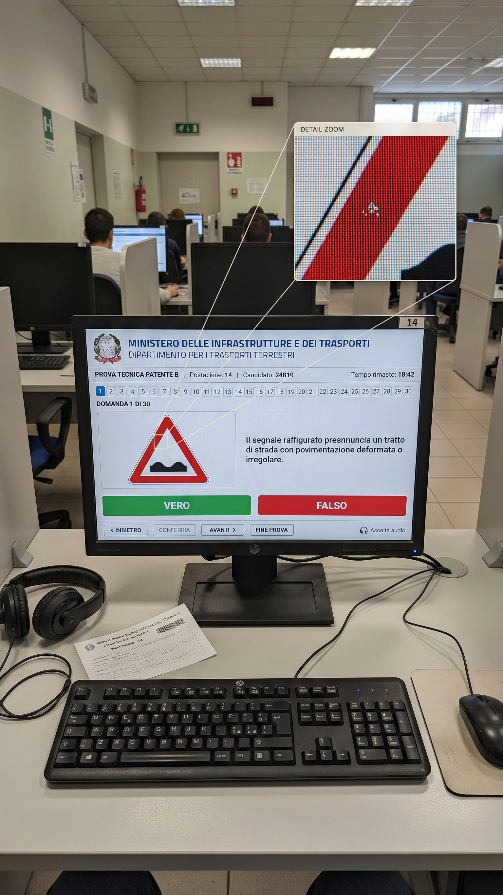
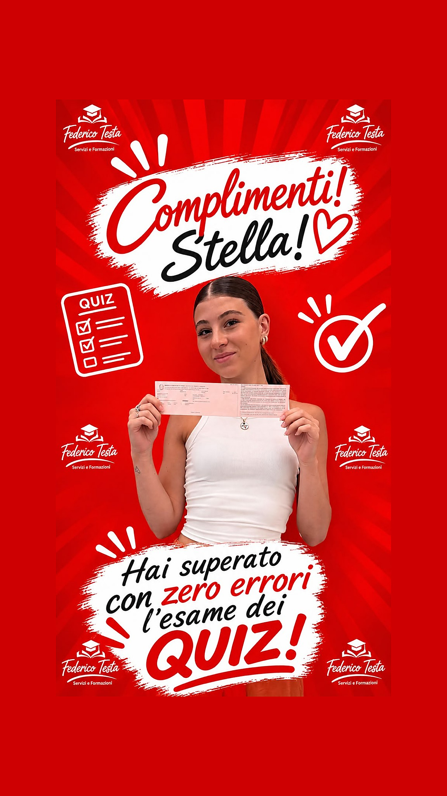
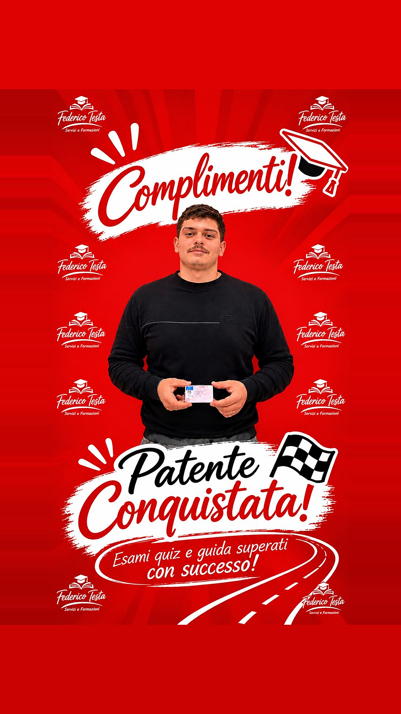
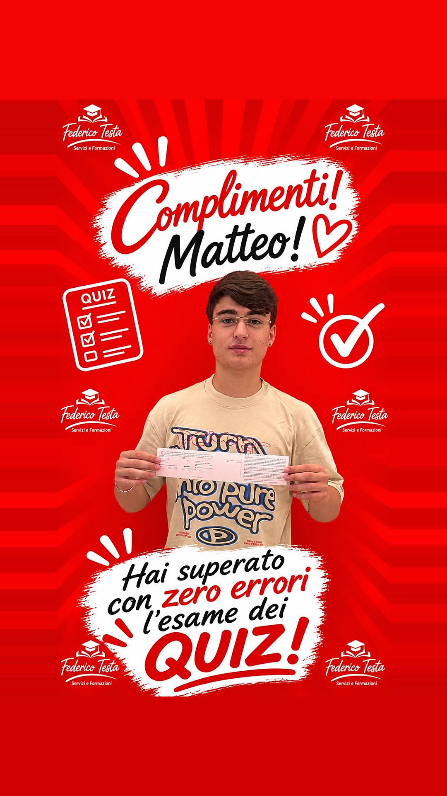
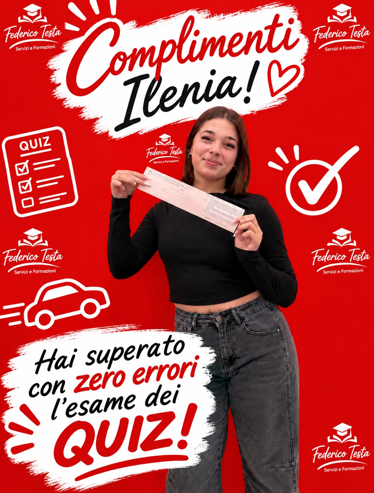
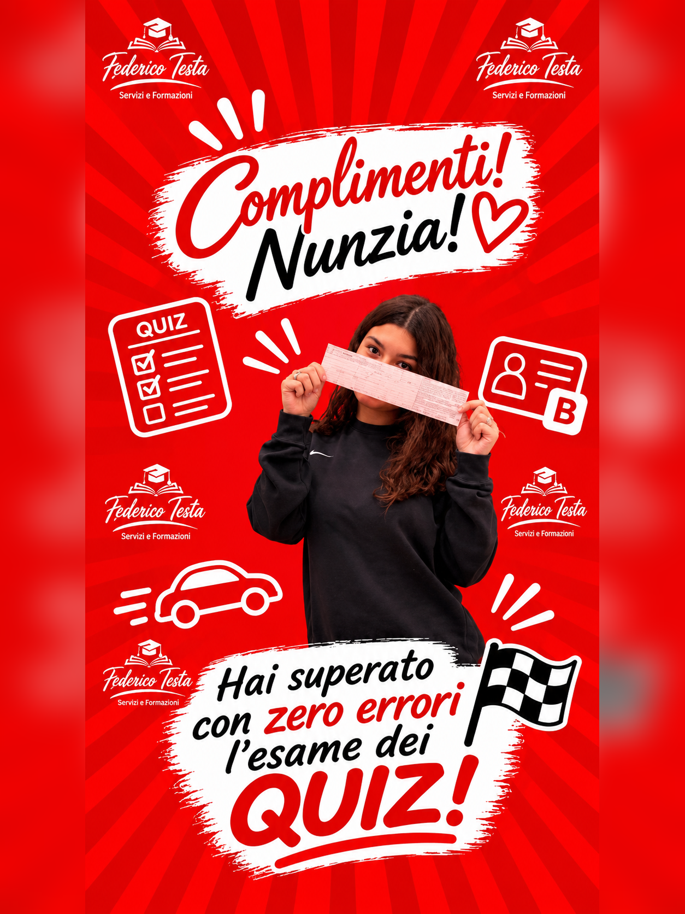

01
I dettagli discreti dei segnali
Impara a osservare alcune particolarità visive che spesso passano inosservate.

GUARDARE NON BASTA. IMPARA A OSSERVARE OGNI DETTAGLIO.
Impara a individuare dettagli estremamente discreti nelle immagini dei quiz, sui segnali e sulla segnaletica orizzontale. Scopri come osservarli e analizzarli per valutare meglio se un'affermazione è VERA o FALSA.
Un sapere personale trasmesso da Federico Testa
Puoi guardare un'immagine più volte senza accorgerti di alcuni indizi. Un'osservazione più attenta può aiutarti ad analizzare un'affermazione da un'altra prospettiva.
Impara a osservare alcune particolarità visive che spesso passano inosservate.
Presta attenzione a elementi della strada che molti candidati trascurano.
Allena uno sguardo più attento sulle immagini dei quiz.
Impara a mettere in relazione le osservazioni per valutare meglio un'affermazione.
Questo metodo integra lo studio delle regole ufficiali del Codice della Strada e non lo sostituisce.
Ex funzionario, ingegnere ed esaminatore presso la Motorizzazione Civile.
La mia esperienza nel settore degli esami teorici mi ha permesso di sviluppare un mio modo di osservare e analizzare le immagini dei quiz.
Oggi desidero condividere questo sapere con i candidati e insegnare loro a guardare le immagini con un'attenzione diversa.
Ogni risultato racconta impegno, determinazione e un traguardo raggiunto. Ecco alcuni studenti che hanno condiviso con noi la loro soddisfazione.





Alcune testimonianze autentiche di persone che hanno condiviso la loro esperienza dopo il percorso di preparazione.
Caricamento delle testimonianze...
Le testimonianze sono pubblicate con il consenso delle persone interessate. I risultati sono esperienze individuali e non costituiscono una garanzia di superamento dell'esame.
Scegli la formula più adatta al livello di approfondimento e accompagnamento che desideri.
Pagamento tramite bonifico bancario. IBAN comunicato in privato. Consegna dopo la conferma dell'accredito sul conto.